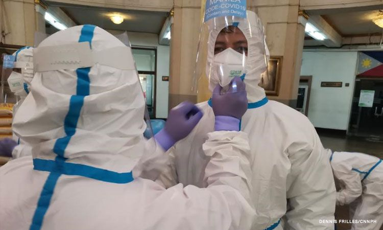

"Fragmented" Healthcare System: Lack of a Unified and National System
Homepage
The healthcare system in the Philippines is seen as “fragmented” by the World Health Association. With the rise of the pandemic last year (2020), the country has been facing more and more problems. A lot of opinions say that “the Philippine Healthcare System was never ready for a pandemic. A strong and unified healthcare system is needed to protect and save the lives of millions of people in our country. Having a strong healthcare system would still be hard to achieve because of the finances it will cost and other current problems the country is facing, but healthcare must still be prioritized. Health is one of the most important matters in our lives and the need for providing access to affordable healthcare facilities and materials/equipment must be one of the top priorities of a country. The following pages below show the different problems the healthcare system in the Philippines and how they are being addressed.
Shortage of Medical Supplies

Learn more about the shortage of Medical Supplies here and how badly it would affect the healthcare system in the Philippines. Especially with the increasing need for more medical supplies. Hospitals worry about their supply of Personal Protective Equipment (PPE) and shortage of hospital beds amid a large number of COVID cases.
Learn more about the inaccessible and unaffordable healthcare to Filipinos who are poor and/or living in remote areas. Many underprivileged Filipinos cannot afford or access healthcare services and supplies. Some of these people may be in need of immediate medical attention. With this, many programs were done to solve this problem.
Learn more about the underpaid and overworked healthcare workers here in the Philippines. The hardships and sacrifices they make, the dangers from exposure to the virus and the unfair and delayed salaries they receive. Many healthcare workers decide to protest and reach out for fair salaries and benefits the government has promised.
Learn more about the COVID-19 situation here in the Philippines. More than one and a half year has passed since the start of the pandemic in March. How badly is the country affected by the COVID-19 virus? Is the number of COVID-19 cases increasing or decreasing? What has been implemented to stop the spread of the virus?